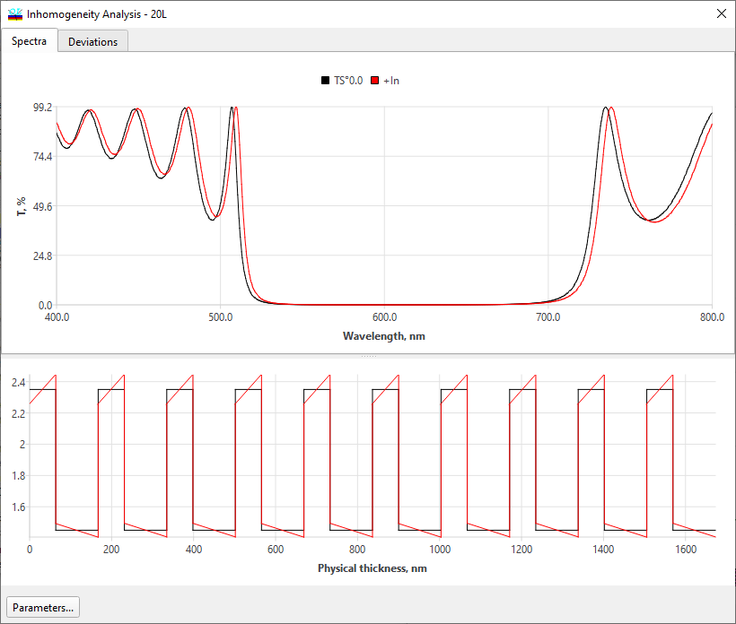
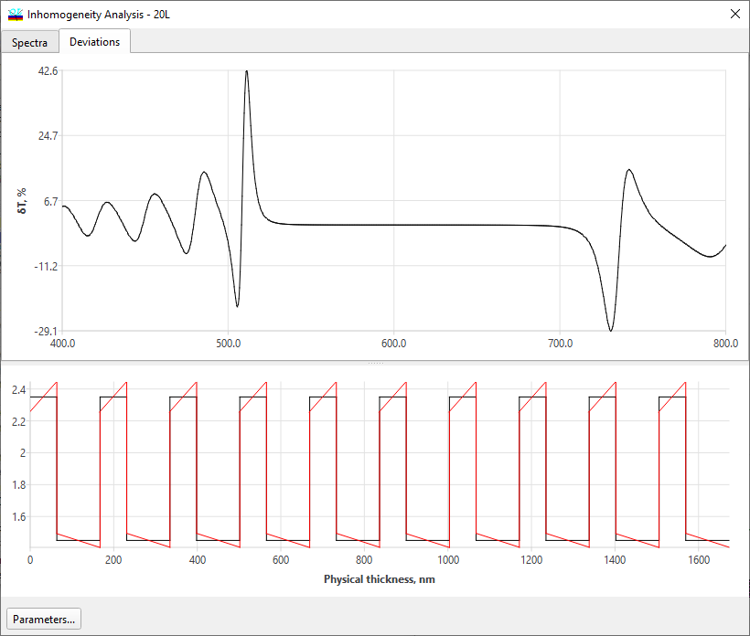

Inhomogeneities/Interlayers Evaluation
Inhomogeneities/Interlayers Evaluation
Navigation: OptiLayer Menu Commands > Analysis Menu > Inhomogeneities/Interlayers >
Inhomogeneities/Interlayers Evaluation
` <back_side_interlayers.html>`__ ` <inhomogeneities_interlayers.html>`__ ` <color_inhomogeneities_interlayers.html>`__
The Inhomogeneities/Interlayers command is accessed from the Analysis menu. It allows evaluating the combined influence of layer bulk inhomogeneities and the presence of interlayers on design spectral characteristics.

At the bottom of this window, you can see the refractive index profile corresponding to the settings in the Inhomogeneities/Interlayers Setup.
The upper part of the window shows the spectral characteristics of the initial design (black line) and the spectral characteristic of the design with inhomogeneities and interlayers (red line).
The lower subwindow shows the refractive index profiles of the design with inhomogeneities and interlayers.
In some cases, it is more convenient to study just deviations of spectral characteristics due to the inhomogeneities/interlayers effects. At the second tab of this window, these deviations are displayed.

See also: